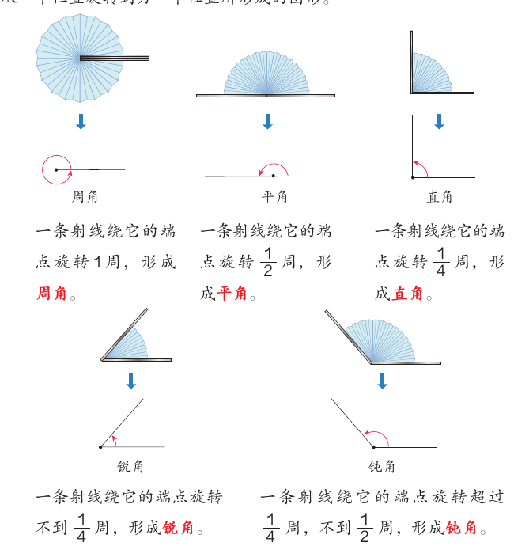
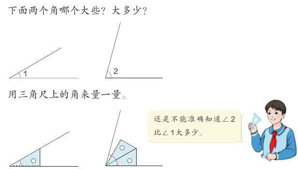
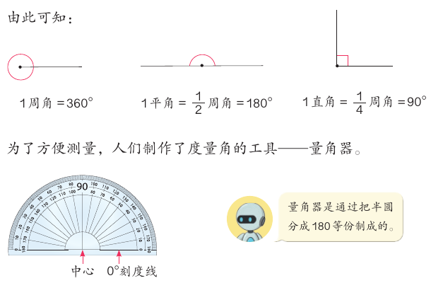
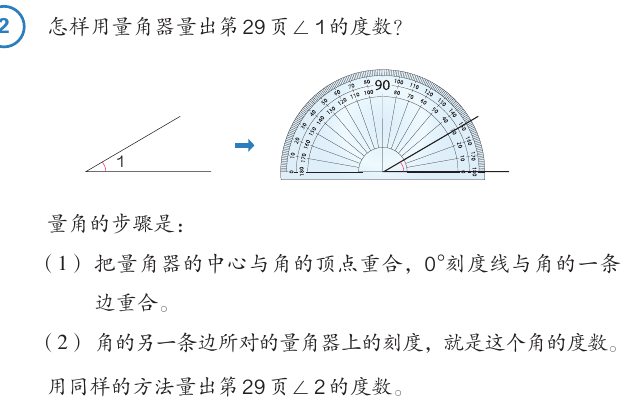
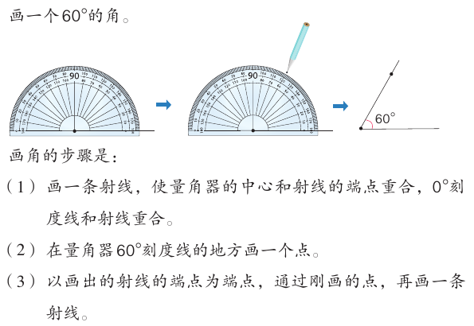
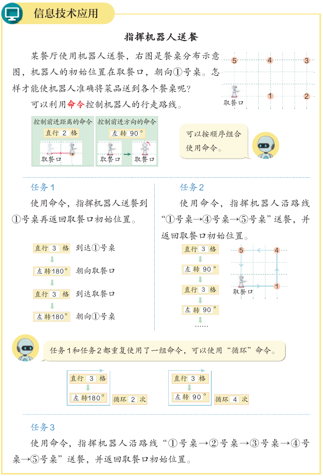

L03 · 角与图形
角的度量
两个角哪个大？大多少？用眼睛看、用三角尺比，都说不准。这一课，我们从旋转重新认识角，再学会用 1° 作单位，用量角器量角、画角。
学完本课，你能够：
01从旋转看角
先说结论：角可以看作一条射线绕着它的端点旋转形成的图形。转得越多，角越大。
通过前面的学习，我们知道从一个点引出两条射线得到的图形是角。从旋转的角度来看，角也可以看作由一条射线绕着它的端点，从一个位置旋转到另一个位置所形成的图形。教材第 28 页

| 角 | 一条射线绕它的端点旋转…… | 度数（第 30 页） |
|---|---|---|
| 锐角 | 不到 1/4 周 | 0° < 锐角 < 90° |
| 直角 | 1/4 周 | 90° |
| 钝角 | 超过 1/4 周，不到 1/2 周 | 90° < 钝角 < 180° |
| 平角 | 1/2 周 | 180° |
| 周角 | 1 周 | 360° |
转一转：射线转多少，是什么角
试一试：
拖动红色圆点，或拖动滑块，让射线绕端点旋转。看度数变大时，角的名字怎样变。重点看 90° 和 180° 这两个“分界线”。
黑色射线不动，红色射线从和它重合的位置开始，逆时针旋转。
黑色射线不动，红色射线从和它重合的位置开始，逆时针旋转。
大小关系（教材第 29 页）锐角 < 直角 < 钝角 < 平角 < 周角。1 周角 = 2 平角 = 4 直角。
平角不是一条直线平角的两条边在一条直线上，但它是一条射线转了半周形成的角，有顶点，有两条边。教材第 38 页“成长小档案”里的同学说：平角很特别，平角的两条边在一条直线上。
补充：转过 180° 以后呢射线转过半周、还不到一周时，也形成一个角。本册教材没有给这种角起名字。教材第 36 页有同学说“我想探究比周角更大的角”，这些问题以后会学。
02度量角的单位：1°
先说结论：要准确测量一个角的大小，就要用一个合适的角作单位来量。这个单位是 1 度，记作 1°。
教材第 29 页问：∠1 和 ∠2 哪个大些？大多少？用三角尺上的角来量，还是不能准确知道 ∠2 比 ∠1 大多少。三角尺上的角太大了，量不细。

人们将圆平均分成 360 份，将其中 1 份所对的角作为度量角的单位，它的大小就是 1 度，记作 1°。教材第 30 页

观察量角器，你还有什么发现量角器上有一个“中心”，有一条“0° 刻度线”。刻度有内、外两圈，两圈的 0° 分别在左右两边。每圈都从 0 数到 180。
练习五第 6 题：量长度、面积和角，道理一样线段 AB 的长度有几个 1 cm，就是几厘米；长方形的面积有几个 1 cm²，就是几平方厘米；∠1 有几个 1°，就是几度。测量长度、面积、角，都是看被测量的图形包含了多少个相应的度量单位。
03用量角器量角
先说结论：量角分两步。先对好“两个重合”，再读另一条边所对的刻度。

量角的步骤（教材第 31 页）
- 把量角器的中心与角的顶点重合，0° 刻度线与角的一条边重合。
- 角的另一条边所对的量角器上的刻度，就是这个角的度数。
虚拟量角器：先对齐，再读对的那一圈
这个角是 °
先点 ① 和 ②，把量角器放好。再看红色的边对着哪个刻度，填进去检查。有的题角的一条边朝右，有的朝左，读的圈不一样。
题目的度数取自教材第 32 页“画出下面的角”和练习六的度数。量角器按常见样式画：内圈的 0° 在右边，外圈的 0° 在左边。
题目的度数取自教材第 32 页“画出下面的角”和练习六的度数。量角器按常见样式画：内圈的 0° 在右边，外圈的 0° 在左边。
最常见的错误：读错圈一个 60° 的角，读错圈会读成 120°。先看哪一圈的 0° 和角的一条边重合，就沿着这一圈往上数。读完再想一想：这个角是锐角还是钝角？锐角不会超过 90°。
04用量角器画角
先说结论：画角分三步：画射线、点点、连射线。

画角的步骤（教材第 32 页）
- 画一条射线，使量角器的中心和射线的端点重合，0° 刻度线和射线重合。
- 在量角器 60° 刻度线的地方画一个点。
- 以画出的射线的端点为端点，通过刚画的点，再画一条射线。
一步一步画角
选好度数，点“下一步”看三个步骤。再把“开口”改成向左，看看射线朝左画时，要在哪一圈找刻度。
教材第 32 页问：你能画一个开口向左的 60° 的角吗？“开口向左”在这里指第一条射线从端点朝左画。
教材第 32 页问：你能画一个开口向左的 60° 的角吗？“开口向左”在这里指第一条射线从端点朝左画。
05三角尺和角的发现
先说结论：一副三角尺上的角是 30°、60°、90° 和 45°、45°、90°。把它们拼起来，可以得到别的度数的角。
练习五第 4 题让你先量一量三角尺上每个角的度数，再拼一拼。第（3）问：你还能用一副三角尺拼出哪些度数的角？
| 拼法 | 算式 | 拼成的角 |
|---|---|---|
| 45° 的角和 30° 的角拼在一起 | 45° + 30° | 75° |
| 45° 的角和 60° 的角拼在一起 | 45° + 60° | 105° |
| 90° 的角和 30° 的角拼在一起 | 90° + 30° | 120° |
| 90° 的角和 45° 的角拼在一起 | 90° + 45° | 135° |
| 90° 的角和 60° 的角拼在一起 | 90° + 60° | 150° |
补充：还能“叠”出角把 45° 的角和 30° 的角叠在一起，露出的部分是 45° − 30° = 15°。上表只列出一部分拼法，是课程作者举的例子。
判断一下（练习六第 3 题）
- 把一个平角分成两个角，如果其中一个角是锐角，那么另一个角一定是钝角。
- 1 周角 = 2 直角。
- 两个锐角合起来的角一定大于直角。
- 一个锐角和一个直角合起来的角一定是一个钝角。
用上面的“转一转”演示试一试，再判断对错。自测题里有其中两题。
06指挥机器人送餐
先说结论：机器人听“命令”行走。“直行几格”控制距离，“左转 90°”“左转 180°”控制方向。重复的一组命令，可以用“循环”。

机器人的初始位置在取餐口，朝向①号桌。教材给出任务 1 的命令：
- 直行 3 格：到达①号桌。
- 左转 180°：朝向取餐口。
- 直行 3 格：到达取餐口。
- 左转 180°：朝向①号桌。
前两条命令重复了一次，所以可以写成“直行 3 格 → 左转 180°，循环 2 次”。
编程送餐：用命令指挥机器人
任务：
添加命令：
整段命令循环 次
选一个任务，用按钮拼出命令，再点“运行”。机器人每次直行停下的地方，就是它送到的餐桌。最后要回到取餐口，并且朝向①号桌。
餐桌位置按教材第 35 页示意图：①、②号桌在取餐口的正前方 3 格、6 格；⑤、④、③号桌在示意图上方 3 格的一排。机器人朝①号桌时，那一排在它的左边。任务 3 的参考写法是课程作者给的，答案不止一种。
餐桌位置按教材第 35 页示意图：①、②号桌在取餐口的正前方 3 格、6 格；⑤、④、③号桌在示意图上方 3 格的一排。机器人朝①号桌时，那一排在它的左边。任务 3 的参考写法是课程作者给的，答案不止一种。
和角有什么关系“左转 90°”就是转 1/4 周，“左转 180°”就是转 1/2 周。连续左转 4 次 90°，机器人转了 1 周，360°，又朝向原来的方向。
07自测与速记
一条射线绕它的端点旋转超过 1/4 周、不到 1/2 周，形成什么角？
教材第 28 页：旋转超过 1/4 周，不到 1/2 周，形成钝角。90° < 钝角 < 180°。
1 周角等于几个直角？
1 周角 = 360°，1 直角 = 90°。1 周角 = 2 平角 = 4 直角（教材第 29–30 页）。所以“1 周角 = 2 直角”是错的。
量角时，第一步要做什么？
教材第 31 页量角的步骤：（1）中心与顶点重合，0° 刻度线与一条边重合；（2）读另一条边所对的刻度。
小明量一个锐角，读出 140°。最可能错在哪里？
锐角小于 90°，所以 140° 一定错了。140° 和 40° 合起来是 180°，说明他读了另一圈刻度。
“两个锐角合起来的角一定大于直角。”这句话对吗？（练习六第 3 题）
举一个反例就够了：30° + 40° = 70°，还是锐角。所以这句话不对。
速记表
| 要点 | 一句话 |
|---|---|
| 从旋转看角 | 射线绕端点转 1/4 周是直角，1/2 周是平角，1 周是周角 |
| 角的大小 | 0° < 锐角 < 90° = 直角 < 钝角 < 180° = 平角 < 360° = 周角 |
| 1° | 把圆平均分成 360 份，1 份所对的角是 1° |
| 量角 | 中心对顶点，0° 刻度线对一条边；读另一条边所对的刻度 |
| 画角 | 画射线 → 在度数处点点 → 从端点过点画射线 |
| 读哪一圈 | 和边重合的是哪一圈的 0°，就读哪一圈 |
相关课程
教材：人教版《数学》四年级上册第二单元“角的度量”第 28–38 页。标为“补充”的内容和模拟演示是课程作者的解释，不是教材原文。